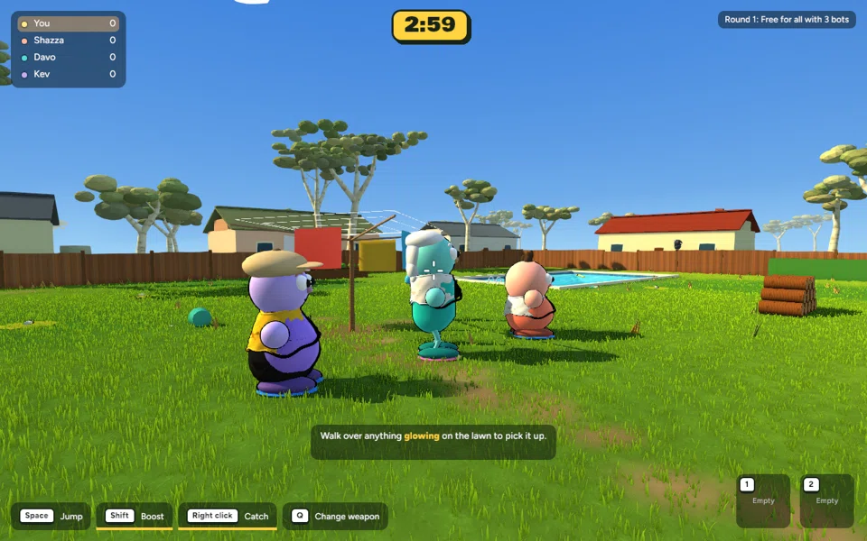
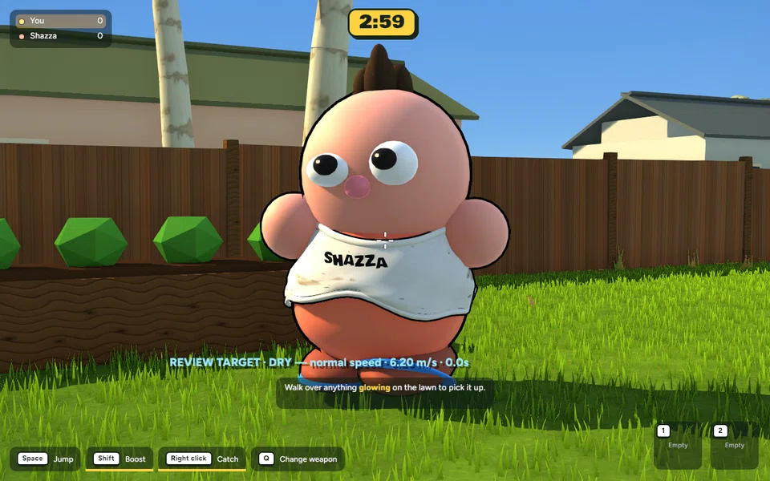

Actual renderer captures. Character models, materials, scoring, physics and sounds are unchanged.
Exact file changes, tuning and recovery · Full backup · 629 tests passed · Release build

Controlled animation fixture: pink character shows the light throw, teal character the heavier throw, and purple character the side impact. This is a staged animation preview using existing characters, not competitive gameplay. Replay timing is slowed for inspection.

Real balloon collision with the existing splash, new presentation feedback and unchanged wet slowdown/expiry.
Constants are at the top of rust/crates/bbq_core/src/feel.rs. Hit-stop and the additional shove affect presentation only. The host simulation keeps running. Remote status-only reactions approximate hit direction from facing.
cd /Users/marcus/Claude/australian-bbq/rust ~/.cargo/bin/cargo run -p bbq_app --release -- --menu
Full backup: /Users/marcus/Claude/australian-bbq-backup-2026-10-19-072641
No commit or push. Guarded selective rollback verified.